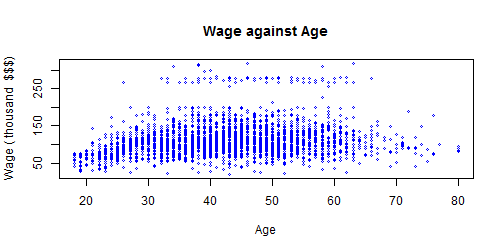

Introduction : (The App can be accessed by clicking here )
When relationship between Predictors and Response variable is Non-Linear, Linear models often perform poorly. This mandates us to consider alternatives. Let's look at the Wage data against Age,from ISLR package.
library (ISLR)
plot(Wage$age, Wage$wage, xlim=range(Wage$age) ,cex =.5, col ="blue",
xlab="Age", ylab="Wage ( thousand $$$)", main="Wage against Age")

As you can see, this relationship is Non-Linear. We now show 4 different models, which handle this Non-Linearity in the data.